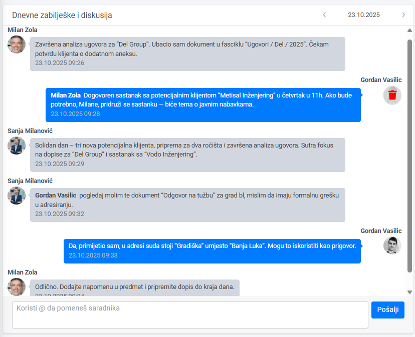

U Legalistik aplikaciji postoji mogućnost vođenja dnevnih bilješki i interne diskusije unutar kancelarije.
Gdje se nalazi? #
Modul se nalazi na Kontrolnoj ploči, ispod sekcije Moji aktivni zadaci i prikazuje se svim korisnicima kancelarije koji imaju pristup sistemu.
Šta omogućava? #
- Svaki saradnik može unijeti kratku zabilješku o aktivnostima tokom dana (npr. završeni poslovi, novi klijenti, zakazani sastanci).
- Moguće je voditi internu diskusiju unutar tima — svi komentari se čuvaju hronološki.
- Modul ima integrisan kalendar, pa možete pregledati bilo koji dan u prošlosti i vidjeti šta je zabilježeno.
- Idealno za praćenje toka rada i dnevne koordinacije unutar kancelarije.
.
💬 Kako koristiti? #
- Tagovanje saradnika: prilikom unosa poruke, koristite znak
@ispred imena kolege (npr.@Milan) da biste ga pomenuli. Korisnik automatski dobija notifikaciju da je pomenut u poruci. - Brisanje poruke: prelaskom miša preko korisničkog avatara (male profilne slike) pojavljuje se opcija Obriši, kojom se unos može jednostavno ukloniti.
📸 Primjer iz prakse #

Savjet #
Koristite ovaj modul svakodnevno za unutrašnju komunikaciju i evidenciju rada — već nakon nekoliko dana dobijate jasan pregled ko je na čemu radio i kako se odvija posao u kancelariji.